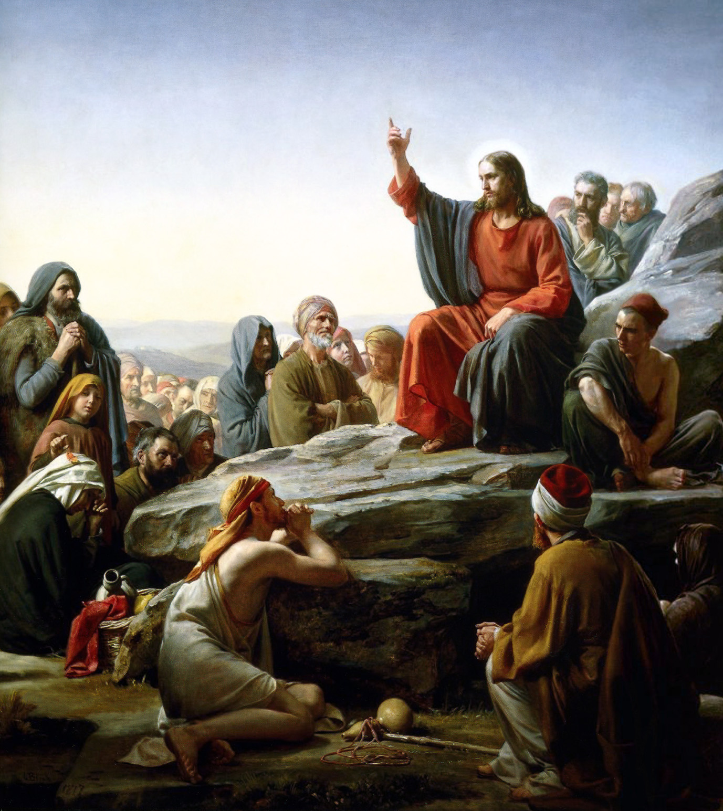

Jesus Christ, King of Kings
Born c. 4 BC in Bethlehem - Crucified and Risen c. AD 30 in Jerusalem

His Life
Jesus Christ is God in the flesh. He was born in Bethlehem to the Virgin Mary and grew up in Nazareth working as a carpenter. Around thirty he started his ministry and in just three years he healed the sick, cast out demons, calmed a storm, walked on water, and raised a man from the dead. He was crucified in Jerusalem under Pontius Pilate and three days later he walked out of the tomb. Death didn't stand a chance.
His Teachings
He didn't teach like the religious leaders of his time, he taught with real authority. He used parables like The Good Samaritan so anyone could understand him, and he told people straight up that he was the way, the truth, and the life. Two thousand years later over two billion people follow him, and no empire or persecution has ever been able to stop that.
His Contributions
The biggest thing he left behind was the Church. He built it on Peter and gave it the sacraments, including the Eucharist at the Last Supper. From there his followers went out and changed the world. The Church started some of the first hospitals and universities in Europe and taught that every person has worth because they were made in the image of God. Even our calendar counts the years from when he was born.
Why He Inspires Me
I've been into Warhammer 40k for a while and the whole universe is built around the Emperor of Mankind, a god on a throne who gave everything to protect humanity. The difference is the Emperor is made up and Jesus actually did it. He's the King of Kings and he still washed his disciples' feet and laid down his life for people who didn't deserve it. I'm commissioning as an officer soon and that's the standard I want to hold myself to, lead from the front and take care of my people first.